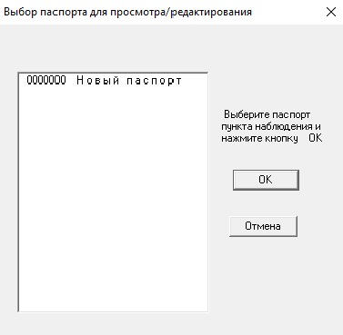
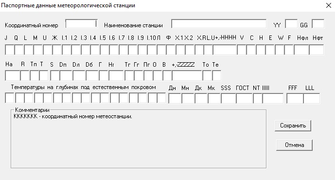

Создание паспорта метеостанции
Этот раздел содержит инструкцию по созданию паспорта метеостанции.
Паспорт метеостанции — это электронный документ, который содержит всю необходимую информацию о метеостанции.
Перед началом работы
В отделе метеорологии вашего УГМС (ЦГМС) запросите необходимые сведения о метеостанции для заполнения паспорта.
Запустите программу
-
В проводнике Windows откройте каталог с установленной программой.
-
Откройте каталог PRG.
-
Запустите файл persona_win.exe.
Создайте паспорт станции
-
В левом верхнем углу нажмите кнопку Ввод данных → Паспорт станции. Откроется окно Выбор паспорта для просмотра/редактирования:
Выбор паспорта для просмотра/редактирования -
Левой кнопкой мыши кликните на надпись новый паспорт.
-
Нажмите кнопку ОК. Откроется окно Паспортные данные метеорологической станции:
Паспортные данные метеорологической станции -
Заполните все поля согласно полученным сведениям из отдела метеорологии.
Для правильного заполнения поля следуйте инструкции в диалоговом окне Комментарии. Для переключения между полями используйте клавишу TAB. -
Нажмите кнопку Сохранить.
Готово! Вы создали паспорт метеостанции.